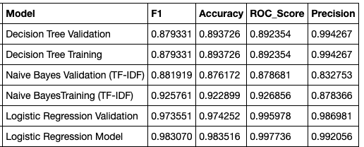

🤬 Twitter Hate Speech Detector 📊
Warning: the contents of the data and project contain many offensive slurs, including but not limited to, racist, sexist, homophobic, transphobic, etc. offenses.
This platform serves to monitor hate speech detected on Twitter. Here, we can find a general overview of the top twenty most negative words on Twitter that are being used. In additon, we can also examine a record of tweets that could be classified as offensive above a 90% likelihood.

Top Twenty Negative Words on Twitter

Ratio of Negative to Neutral/Positive Words on a Given Dataset
Relevance
Hate speech, aggressive language, and cyberbullying on social platforms can make the experience of being digitally immersed very difficult. While the argument of having the freedom of speech continually persist, the lines between true freedom and offensiveness become blurred. Freedom of speech can easily be warped into offensive, hateful, and unconstructive words online, particularly towards people who belong to marginalized communities. Formally, hate speech can be defined as abusive or threatening speech or writing that expresses prejudice against a particular group, especially on the basis of race, religion, or sexual orientation (as defined by Oxford Languages).
Music Video: T5 (Swet Shop Boys)
In the song T5 by the Swet Shop Boys (Riz Ahmed and Himanshu Suri), we instantly see an example of this in relation to Trump's 2016 presidential campaign and policies proposed upon being elected. The Muslim Ban in particular, sparked a wide range of hostile sentiments towards the Muslim community. Trump's tweets online, such as the one below, has increased the overall sentiment of Islamophobia in the USA. Muslims, whether they are citizens, refugees, or have immigrated to America, have faced incredible amounts of discrimination within the US, as demonstrated by Riz and Himanshu being specially screened at an airport.
13 Syrian refugees were caught trying to get into the U.S. through the Southern Border. How many made it? WE NEED THE WALL!
— Donald J. Trump (@realDonaldTrump) November 22, 2015
As citizens, how can we keep track of hate speech online that's affecting our fellow peers and neighbors? While I believe there are myriad solutions to helping each other out, I wanted to try a solution using machine learning models. Machine learning classifiers, alongside a vast amount of data gathered through API calls, can offer valid solutions to organizations and companies attempting to monitoring content on their platforms.
About the model
In this project, various classifiers such as logistic regression, decision trees, and convolutional neural networks were applied to a pre-processing dataset in an attempt to classify language used in tweets. The tweets themselves, in total 40,000 of them, were labeled as negative (offensive) or positive (non-offensive). One of the datasets was taken from an Analytics Vidhaya competition, while another one was taken from a collection found on this Github repository.
The main goal of this project is to build a model that discern hate speech on Twitter, a platform that rapidly lets your thoughts out with a simple click.
I have tried to follow a typical machine learning cycle in order to generate my model. The workflow can be summarized below by Google Cloud.

ML Workflow (from Google Cloud)
There are six parts to this project:
- Data preprocessing and cleaning
- Exploratory data analysis
- Training models
- Fetch tweets using Twitter API and store in local MySQL base
- Make predictions on new Tweets with the offline model
- Deploy machine learning model
Data preprocessing and cleaning
Even when there is so much data available to us online, there is always some prelimary work we have to do before feeding data into a model, or even doing some exploratory data analysis. In this context of this project, there are two datasets, and ideally they should be merged so that we can feed one cohesive set of data into the algorithm. The solution is to merge these datasets using the Pandas library. In addition to merging these datasets, it is important to also balance them. There should be a roughly equal split between tweets that could are labeled as negative/offensive and positive/non-offensive.
In addition, it's important to make sure that model receives data that is clean and relevant. For this reason, it is important to make the following modifications:
- Lowercase all words in tweets (eliminate any bias that could stem from words being uppercase or lowercase)
- Removing duplicate tweets
- Removing retweets
- Removing Twitter handles
- Removing mentions
- Categorizing the parts of speech (lemmatization)
- Removing excess whitespace
- Removing stop words and words that are two characters or less
Making all these modifications causes extra columns to be added to the data frame as we process through. In the end, we drop the irrelevant columns.
Exploratory data analysis
Tweets can be tokenized and we can perform further operations on them, such as changing "n't" to "not". More detail can be find in the Exploration.ipynb file in my repository linked below. We can look at the most common negative and positive words in a given dataset as well.

Top ten negative words

Top ten positive words
Training of models
The only predictor used for the modeling is the pre-processed and lemmatized version of the text. We use a Term Frequency Inverse Document Frequency (TF-IDF) vectorizer to accomplish this. This is a common algorithm used to transform text into a meaningful representation of numbers used to fit machine algorithm for prediction. The TF-IDF object is pickled so that it can be used in the analysis of newer tweets later on. The threshold of the maximum and minimum document frequency has been set at 90 and 20 percent, respectively. The deep learning model also requires different kinds of preprocessing and that will be applied right before the CNN modeling.
The TF-IDF matrix was used across all of the models except for the CNN and Naive Bayes. The CNN performance had a very low accuracy (just above 50%) on the validation set. The neural network definitely needs improvement in order for deep learning to be a robust model for this application.
Comparison of the performance of all the models. Logistic regression performed with the highest accuracy.
The high performance of logistic regression is due to the fact that there is no neutral class of tweets present like there was in the unmodified datasets. If we were to introduce a third class of neutral tweets in addition to the positive and negative tweets, the performance of the logistic regression has a definite chance of decreasing in accuracy.
Prototype/development notes
The model created is currently offline and has not been deployed yet. Currently, I have applied for Twitter developer access in order to secure API keys and create a live feed upon deploying the logistic regression algorithm. The current code line for this application is maintained at this repository.
What would a finished product look like?
Once the Twitter API is connected, fresh tweets can be collected periodically (perhaps every few hours) on a local MySQL database which solely serves the purpose to house an incoming sets of weets. The Python library Tweepy can be used to create a connection to the Twitter API. Within my current codeline, I've included a file known as custom_tweepy_listener.py that would serve this purpose. It gathers the necessary information about an incoming tweet (actual tweet content and time). All text would need to trimmed of emojis in order to be stored in the database. It's possible to also filter by topic. Specifically, we can look at topics potentially related to Islamophobia by looking at keywords such as "Islam" and "Muslim." We gather this specific information by looking at the hashatgs on tweets.
With this pipeline in place, we can pull sets of data from MySQL to a new Jupyter notebook where it can undergo similar preprocessing to the dataset we had cleaned before. Ideally, it would be great to derive insights into the top most offensive words being used on the platform, and the ratio of negative to positive/neutral content circulating on the website.
Currently, this application was is displayed using Flask and deployed on Heroku. It is possible to deploy the machine learning model via Flask to allow a live feed of data analysis being done as new tweets come into the database and go through the preprocessing and algorithm.
Extensions
Extensions can come in two ways: technologically and socially.
Technological Limitations and Improvements
This platform should be extended into any kind of social media where there is an opportunity to see public content. Examples of this could include Instagram, LinkedIn, and even YouTube comments. Moreover, even though this model performed well as a logistic regression, the convolutional neural network model needs significant improvement. The datasets used for this project were created by CrowdFlow users who judged certain tweets as hate speech, offensive, positive, or neutral. Some may find certain to be very harmful and offensive while others do not. This type of crowdsourced data can have the possible to skew the findings, and this is something anyone who practices machine learning should be aware of.
Social Impact and Discussion
We have a social responsibility to treat other with kindness and respect. While the judgment used to label tweets as offensive and non-offensive is very subjective, it is our best call to practice empathy in order to better understand why some language makes certain people feel uncomfortable.